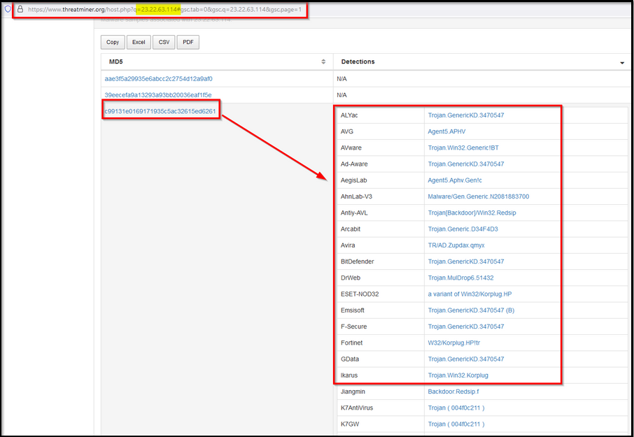
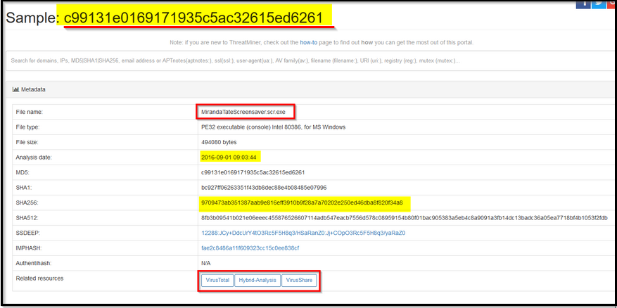
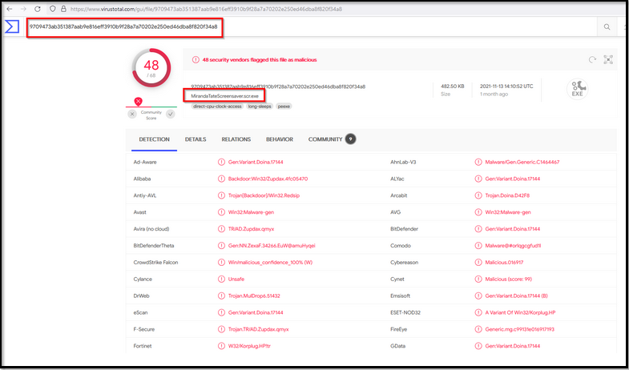
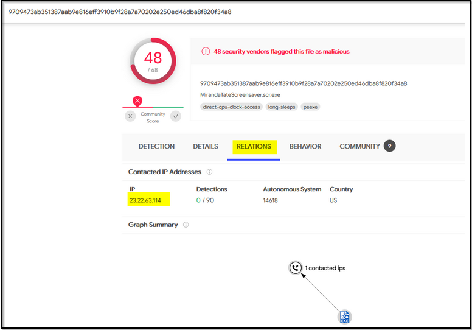
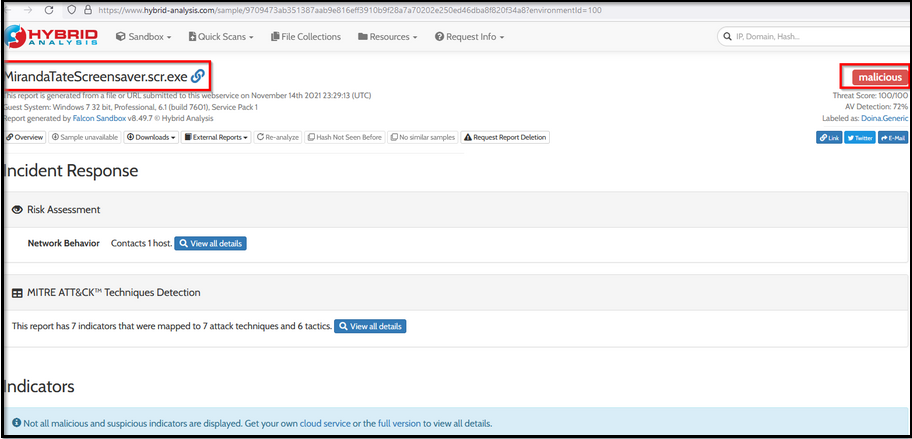
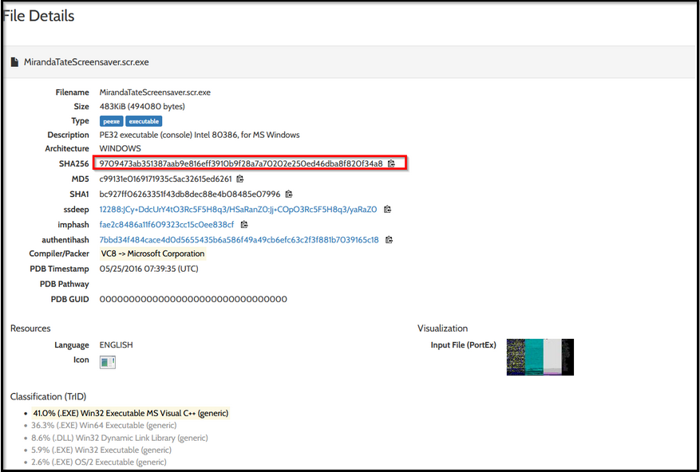

Threat Intel report suggested that this adversary group Poison lvy appears to have a secondary attack vector in case the initial compromise fails. Our objective would be to understand more about the attacker and their methodology and correlate the information found in the logs with various threat Intel sources.
OSINT sites
• ThreatMiner• Virustotal
• Hybrid-Analysis
ThreatMiner
Let's start our investigation by looking for the IP 23.22.63.114 on the Threat Intel site ThreatMiner.Reference: https://www.threatminer.org/host.php?q=23.22.63.114#gsc.tab=0&gsc.q=23.22.63.114&gsc.page=1

{kind=link}
We found three files associated with this IP, from which one file with the hash value c99131e0169171935c5ac32615ed6261 seems to be malicious and something of interest.
Now, click on this MD5 hash value to see the metadata and other important information about this particular file.

{kind=link}
Virustotal
Open virustotal.com and search for the hash on the virustotal now. Here, we can get information about the metadata about this Malware in the Details tab.Reference:https://www.virustotal.com/gui/file/9709473ab351387aab9e816eff3910b9f28a7a70202e250ed46dba8f820f34a8/community

{kind=link}

{kind=link}
Hybrid-Analysis
Hybrid Analysis is a beneficial site that shows the behavior Analysis of any malware. Here you can look at all the activities performed by this Malware after being executed. Some of the information that Hybrid-Analysis provides are:• Network Communication.
• DNS Requests
• Contacted Hosts with Country Mapping
• Strings
• MITRE ATT&CK Mapping
• Malicious Indicators.
• DLLs Imports / Exports
• Mutex Information if created
• File Metadata
• Screenshots
Reference: https://www.hybrid-analysis.com/sample/9709473ab351387aab9e816eff3910b9f28a7a70202e250ed46dba8f820f34a8?environmentId=100

{kind=link}
Scroll down, and you will get a lot of information about this Malware.

{kind=link}
In this phase, we again leveraged online Threat Intel sites to find malware associated with the adversary's IP address, which appeared to be a secondary attack vector if the initial compromise failed.
Findings:
• A malware name MirandaTateScreensaver.scr.exe was found associated with the adversary.• MD5 of the malware was c99131e0169171935c5ac32615ed6261